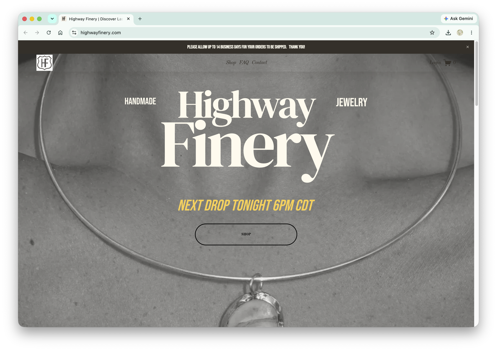
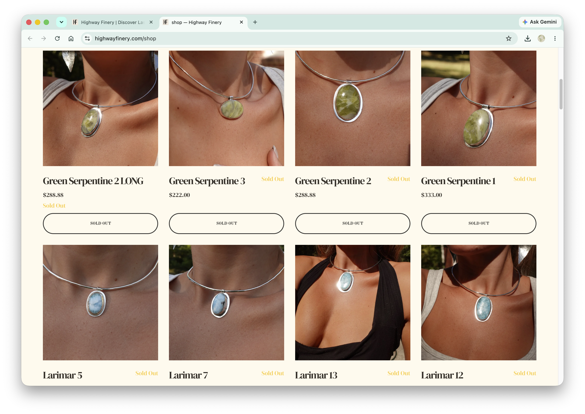
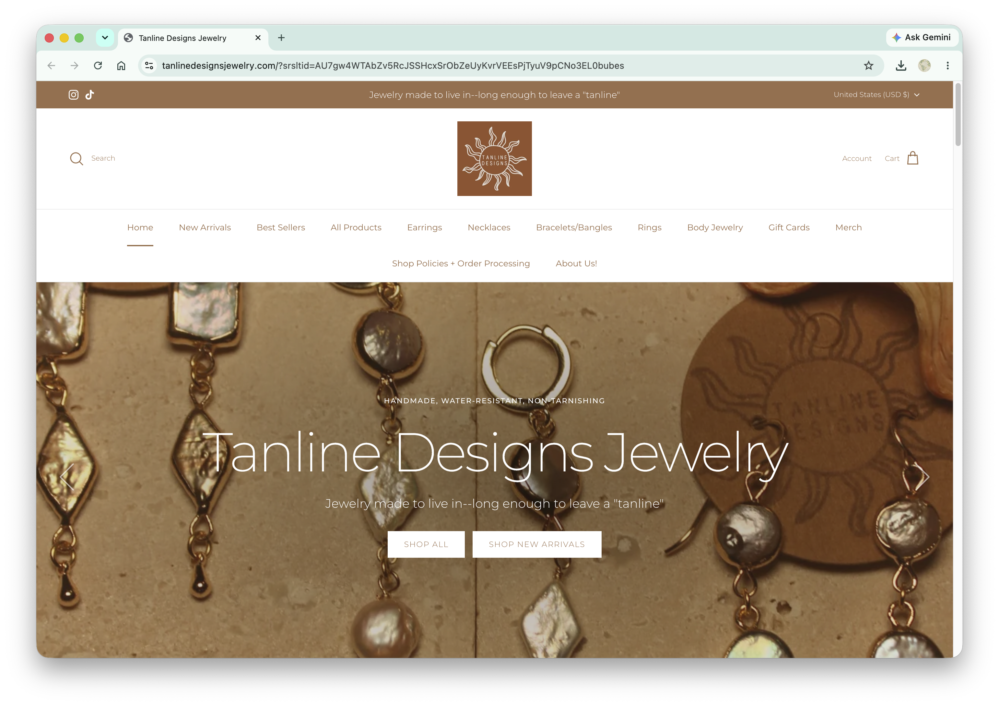
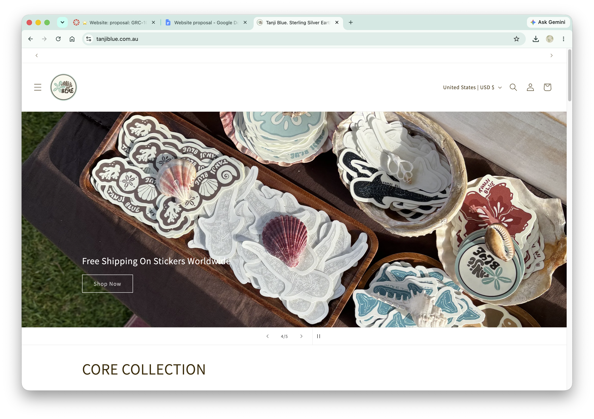
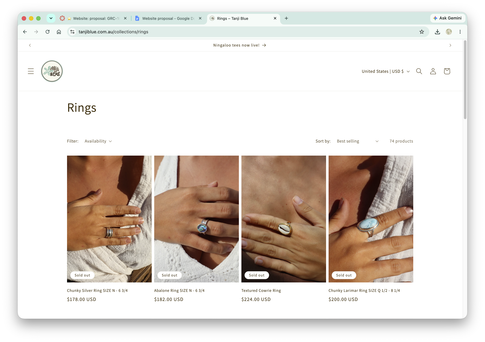

Jewelry Company (Pacific Pearl)
Handmade jewelry collections that drop monthly. Inspired by natural elements found on the shores of the pacific coast. Made from high quality,ethically sourced, and waterproof silver metals. Includes all types of jewelry; earring, necklaces, bracelets, bangles, rings, etc.
This brand is intended for young adults who are into ocean inspired jewelry and are looking for high quality and handmade, one of a kind pieces. This brand does have a strong feminine influence so is more likely geared towards females.
The website will have a very modern feel and utilize photography of jewelry and the ocean to capture the vibe of the brand. It will feel more organic and natural with an ocean inspired color palette and artistic fonts.
https://www.highwayfinery.com/a>


https://tanlinedesignsjewelry.com



Inspired by the beauty of the Pacific coast, Pacific Pearl creates handmade jewelry designed to bring a touch of the ocean wherever you go. Each monthly collection features high-quality, ethically sourced, waterproof silver pieces made to last.
[necklace displayed on beach sand]
Pacific Pearl was created from a love for the ocean, natural beauty, and jewelry that feels personal. Inspired by the shores of the Pacific coast, each piece is thoughtfully handmade to capture the effortless beauty of the sea and bring a little bit of the coast into everyday life. Our collections are designed with quality, individuality, and longevity in mind. Using ethically sourced, waterproof silver metals, Pacific Pearl creates timeless pieces that are made to be worn, loved, and enjoyed wherever life takes you. With a new collection dropping each month, there is always something new to discover.
[girl wearing full earring stack in ocean]